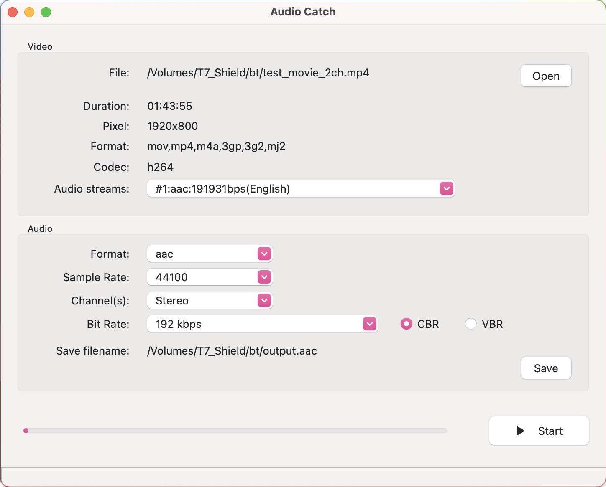

Debug Studio
Powerful Tools
Built for Mac
Simple, fast, and elegant productivity apps
crafted for the macOS experience.
TextCatch
Turn speech into text with Whisper AI — locally, privately.
Explore →AudioCatch
Extract audio from any video — fast and precise.
Explore →TextCatch
From spoken word to written text — powered by Whisper AI.
Your Speech. Your Text. Your Mac.
TextCatch leverages the power of OpenAI's Whisper model to transcribe video, audio, and live recordings into accurate text — all running locally on your Mac. No internet required, no data uploaded, no subscription needed.
Whisper AI Engine
Powered by OpenAI Whisper — the industry-leading open-source speech recognition model. Runs entirely on your Mac for unmatched accuracy.
Wide Format Support
Import video (MP4, MKV, MOV, AVI, M4V, WMV…) or audio files (MP3, WAV, AAC, FLAC, M4A, OGG…) and start transcribing in seconds.
Built-in Recording
Record audio directly inside the app and transcribe it on the spot — perfect for meetings, lectures, or voice memos.
Flexible Model Selection
Choose from Whisper's full model range — tiny, base, small, medium, and large — to balance transcription speed against accuracy for your task.
Fast Local Processing
Everything runs on-device. No cloud uploads, no waiting for a server. Your files stay private and transcription finishes fast.
Video Preview
Preview your video directly inside TextCatch. Play back, seek, and review content before or after transcription without leaving the app.
Export SRT & Plain Text
Save transcripts as standard SRT subtitle files ready for video editors, or export as clean plain text for documents, notes, and more.
Multi-language Support
Transcribe content in dozens of languages. Whisper's multilingual models handle a wide variety of languages, accents, and dialects with ease.
Privacy First
Your audio and video never leave your machine. TextCatch processes everything locally — no accounts, no data collection, no compromise.
AudioCatch
Convert video to audio — clean, fast, and precise.


Multiple Video Formats
Supports a wide range of video formats including MP4, MKV, MPEG, AVI, WMV, ASF, FLV, F4V, RM, RMVB, VOB, DAT, DV and more.

Various Audio Outputs
Export audio as AAC, MP3, OGG, WAV, or FLAC — compatible with any player, editor, or platform you use.
Audio Channel Selection
Choose exactly which audio channel to extract from multi-channel or stereo video sources.

Custom Output Settings
Fine-tune sample rate, channels, bitrate, and more for professional-grade audio output.